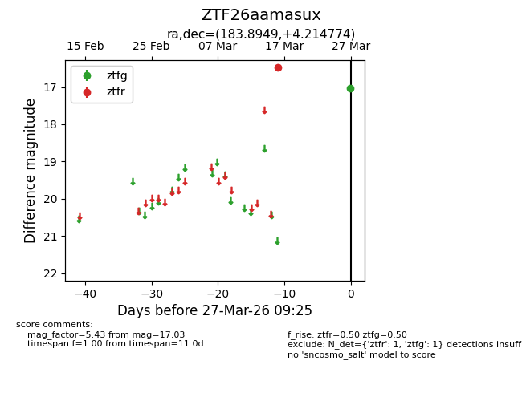
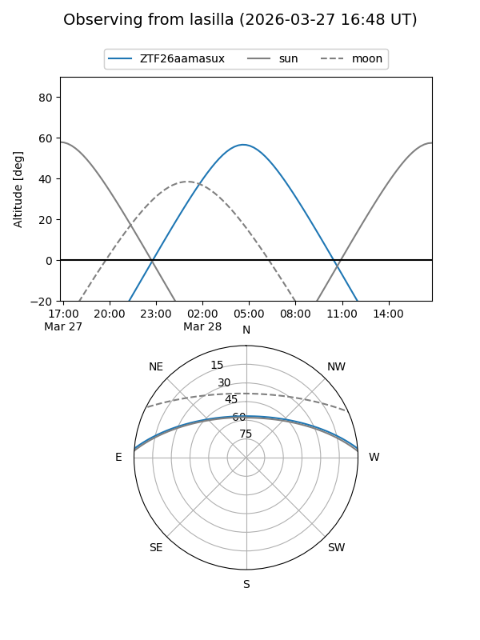
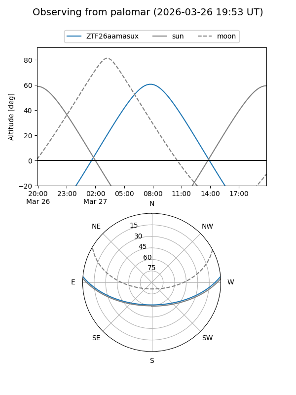

ZTF26aamasux
Target ZTF26aamasux at 2026-03-27 09:28
Aliases and brokers:
FINK: link
Lasair: link
ALeRCE: link
alt names
ZTF26aamasux (ztf,fink_ztf)
Coordinates:
equatorial (ra, dec) = 183.8949,+4.21477
equatorial (HMS+DMS) = 12:15:34.79,+04:12:53.19
galactic (l, b) = (280.8880,+65.54020)
Flags:
Photometry:
last ztfg=17.03, ztfr=16.48
1 ztfg, 1 ztfr detections
Lightcurve

Visibility


Additional plots